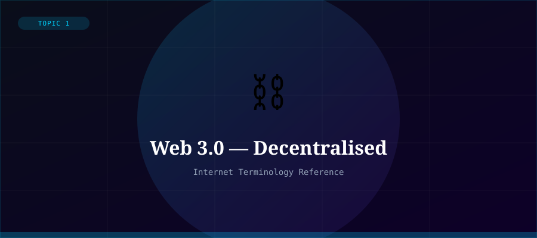

What is Web 3.0?
Web 3.0 (also written Web3) refers to the next evolution of the Web, characterised by decentralisation, semantic understanding, and user ownership of data. It builds on blockchain technology to remove reliance on centralised platforms (like Facebook or Google), returning control to individual users.
The concept has two intertwined meanings: the 'Semantic Web' vision of Tim Berners-Lee (machines understanding the meaning of web content) and the blockchain/cryptocurrency community's vision of a decentralised web powered by tokens and smart contracts.
Key Features of Web 3.0
- Decentralisation — no single company controls the network
- Blockchain — transparent, tamper-proof distributed ledger
- Smart Contracts — self-executing code on the blockchain
- NFTs — non-fungible tokens representing unique digital ownership
- DeFi — decentralised finance without traditional banks
- Semantic Web — data that machines can understand and reason about
- AI integration — intelligent, personalised web experiences
Challenges and Criticisms
Web3 faces significant challenges: scalability (blockchain transactions are slow and energy-intensive), complexity (hard for average users to use), regulatory uncertainty, and significant speculation and fraud in cryptocurrency markets.
Critics argue Web3 is more hype than substance, and that truly decentralised systems are difficult to maintain and govern. Supporters argue it represents a fundamental shift in Internet power dynamics.
Technologies
Core Web3 technologies include Ethereum and other smart contract platforms, IPFS (distributed file storage), MetaMask and crypto wallets, decentralised autonomous organisations (DAOs), and AI/ML systems that power semantic understanding.